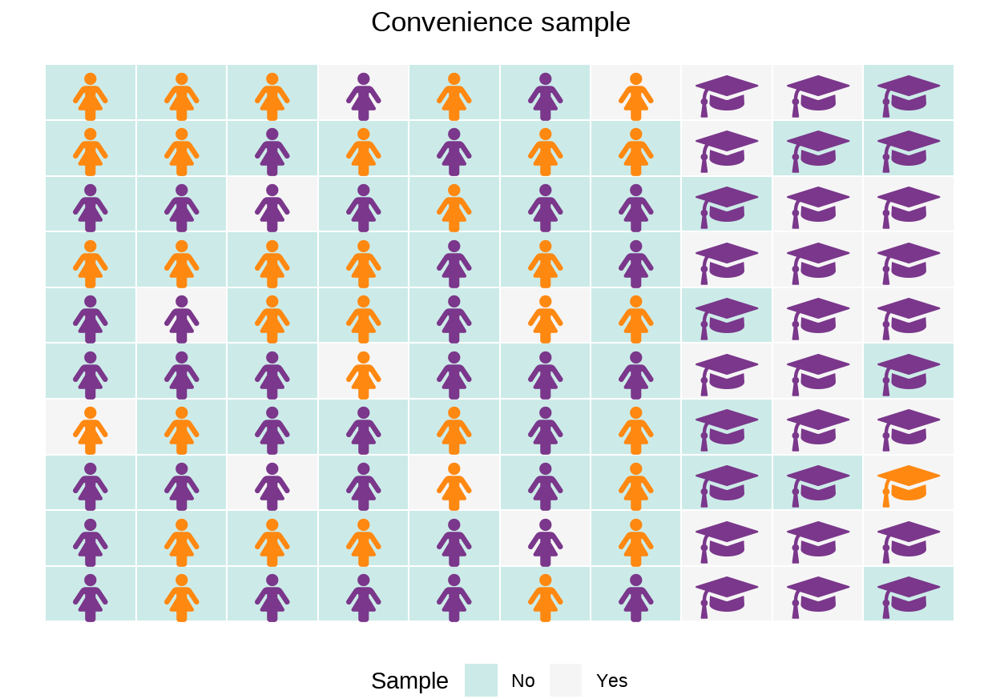
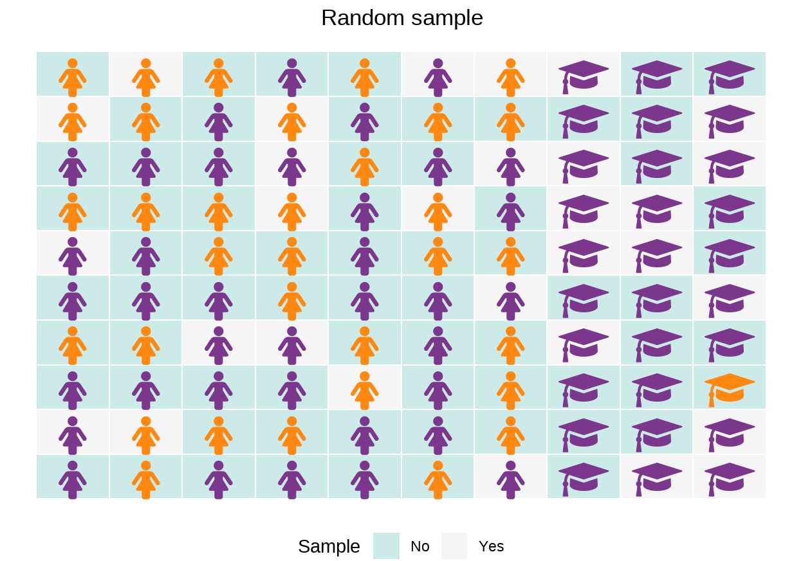

Lernziele
In diesem Modul lernen Sie:
die unterschiedlichen Anforderungen von Beschreibung und Vorhersage;
welche Vorteile eine zufällig gezogene Stichprobe hat;
welche Vorteile eine zufällige Zuordnung im Rahmen eines Experiments hat.
Weniger Übergewicht durch Stillen?
Eine
Was Sie sehen: Kinder von Frauen, die mindestens 4 Monate voll
Dies ist die Ebene Beschreibung (siehe Modul 3).
Um die Ebenen Vorhersage und
Kausale Inferenz zu erreichen brauchen wir
mehr. Einen hilfreichen Kniff dafür kennen Statistiker:innen und
Wissenschaftler:innen schon lange.
Erstellen wir zunächst ein stark vereinfachtes Modell, in dem wir die folgenden kausalen Zusammenhänge annehmen:
Übergewicht des Kindes im Alter von 6 Jahren hängt eventuell ab vom vollständigenStillen durch die Mutter bis zum 4. Monat (Ja ,Nein ).Übergewicht hängt eventuell zusätzlich ab vom Bildungsgrad der Mutter, hier gemessen daran, ob die Mutter einen Hochschulabschluss hat und somitAkademikerin ist.Stillen (Ja ,Nein ) hängt eventuell davon ab, ob die MutterAkademikerin ist.
Das kausale Diagramm sieht dann wie folgt aus:

So weit, so gut. Für die Arbeit mit realen Daten müssen wir aber noch zusätzlich etwas berücksichtigen: Wir haben natürlich nicht Daten für alle Frauen mit Kindern, sondern nur für eine Stichprobe.
Population und Stichprobe
Angenommen in einer Population die uns interessiert sind 30% Akademikerinnen (). Eine relevante Population könnte zum Beispiel alle Mütter in einem bestimmten Land zu einem bestimmten Zeitpunkt sein.
Mindestens 4 Monate voll

In dieser Ziel-Population liegt der Anteil
In der Regel kennen wir die Werte in der Population gar nicht, wir haben nur eine Stichprobe zur Verfügung für unsere Analysen.
Nehmen wir an, bei der Datenerhebung gibt es einen
Zusammenhang zwischen dem Bildungsgrad der Mutter
(

Ziehen wir jetzt eine mögliche Stichprobe, Frauen die in unseren Daten landen sind farblich hinterlegt:

In dieser Gelegenheitsstichprobe liegt der Anteil
Wir können zwar das Ergebnis der Stichprobe zur Beschreibung dieser verwenden, aber wir können die Ergebnisse weder verallgemeinern noch zur Vorhersage verwenden.
Wollten wir anhand der Daten zum Beispiel vorhersagen, ob eine zufällig gewählte Frau stillt oder nicht, so läge unsere geschätzte Wahrscheinlich von \(Pr(\color{green}{\text{Stillen}} = \color{purple}{\text{Ja}}) = 0.8\) zu hoch.
Wir brauchen also mehr als nur die Daten der Stichprobe…
Zufällige Stichprobe
Das Problem ist, dass unsere Stichprobe von einer Variable abhängt,
Dieses Problem betrifft zahlreiche Umfragen – oft nehmen Personen mit bestimmten Eigenschaften lieber teil, und diese Eigenschaften wiederum hängen mit unserem Untersuchungsgegenstand zusammen.
Wie können wir an der Stelle sicherstellen, dass unsere Stichprobe uns nicht hinters Licht führt?
Hier hilft der Zufall!

Quelle: https://pixabay.com/de/photos/w%c3%bcrfel-rot-fallen-zufall-635353/
Durch die zufällige Auswahl der Stichprobe wird die Abhängigkeit der
Stichprobenzugehörigkeit von der Variable

Die Stichprobe hängt dann nur noch vom Zufall ab, und dieser ergibt z.B. dieses Ergebnis:

In dieser zufälligen Stichprobe weicht der Anteil
Alle Abweichungen sind nur noch zufällig – mal werden wir den wahren Wert überschätzen, mal werden wir ihn unterschätzen. Und je größer die Stichprobe ist, desto weniger schwankt der Anteil bei wiederholter Stichprobenziehung.
Dank der Zufallsstichprobe können wir somit zuverlässige Vorhersagen machen darüber, ob eine zufällig gewählte Frau stillt oder nicht.
Aber wie sieht es mit dem Analyseziel Kausaler Inferenz aus?
Zufällige Zuordnung
Über unsere fiktive Studie wird in den Medien berichtet. Eine mögliche Schlagzeile lautet:
Gesunde Wirkung von Stillen bewiesen: 80 % der Kinder von Frauen, die mindestens 4 Monate voll stillen, sind im Alter von 6 Jahren nicht übergewichtig.
Zu wissen, wie viele
Während in der fiktiven Studie dieser Anteil, wie in der Schlagzeile
berichtet, bei
Die Daten wurden im Rahmen einer Beobachtungsstudie
erhoben, das heißt es wurde erfragt, ob die Mütter
Ein Vergleich des Anteils
\[\color{purple}{0.8}-\color{orange}{0.44}=0.36.\]
Das angenommene Modell war folgendes:
Dies führt zu folgender fiktiver Verteilung in der Population:

Bei
Aber: Akademikerinnen
Randomisiertes Experiment
Unter Annahme des kausalen Modells mit nur einer Konfundierenden (hier: Akademikerin) könnten Sie, wie Sie bereits gelernt haben, einfach für diese Variable adjustieren. Aber was, wenn Sie die Variable in Ihren Daten gar nicht erhoben haben? Und, noch viel wichtiger: Natürlich könnte es hier zahlreiche weitere Konfundierende geben.
Ein klassischer Lösungsansatz zur Bestimmung von durchschnittlichen kausalen Effekten sind randomisierte Experimente (engl. randomized controlled trial, RCT). Dabei werden Pfeile, die auf die Variable \(\color{green}{X}\) zeigen eliminiert, und die Zuweisung \(do(\color{green}{X}=\color{green}{x})\) erfolgt zufällig.
Hinweis: Wäre an dieser Stelle ein randomisiertes Experiment überhaupt ethisch vertretbar und praktisch umsetzbar? Können wir randomisieren, welche Mütter stillen und welche nicht? Im Interview mit der Ökonomin Anne Brenøe erfahren Sie mehr zu Designs, mit denen die kausalen Effekte des Stillens in der Praxis untersucht werden können.

Mit einem möglichen Ergebnis wie folgt:

Ein Vergleich des Anteils
\[\color{purple}{0.76}-\color{orange}{0.6}=0.16.\]
In der
In unserem
Um von der reinen Vorhersage (“Wie wahrscheinlich ist es, dass eine zufällig gewählte Frau stillt?”) zur kausalen Inferenz zu kommen (“Welchen Effekt hat das Stillen auf das Risiko von Übergewicht?”) benötigt es mehr als nur die Daten. Wir benötigen zusätzlich wissen darüber, wie die Daten entstanden sind – welche zusätzlichen Variablen die Variablen von Interesse beeinflusst haben, oder ob beispielsweise eine zufällige Intervention stattgefunden hat.
Richard McElreath weist in seinem Vortrag Causal Thinking for Descriptive Research zu Recht darauf hin, dass wir ehrliche Methoden für bescheidene Fragen einsetzen sollen:
Was soll analysiert werden?
Welche Daten müssen wir dafür idealerweise haben?
Welche Daten liegen tatsächlich vor?
Was ist der Grund für mögliche Abweichungen zwischen (2) und (3)?
In diesem Modul haben Sie statistische Methoden kennengelernt, wie Sie Datenerhebung, wenn möglich, optimal gestalten können, um in (4) keine Abweichungen festzustellen. Optimalerweise haben wir eine Zufallsstichprobe; optimalerweise gibt es eine zufällige Zuordnung zu experimentellen Gruppen. Leider gelingt das in der Praxis nicht immer; in manchen Situationen ist es schlicht nicht möglich.
Hinweis
Bitte melden Sie Fehler, Unklarheiten und Verbesserungsvorschläge hier.
Das Vorhaben Was, wie, warum? Einstiegskurs Kausale Inferenz (WWWEKI) wird mit Mitteln des Bundesministeriums für Bildung und Forschung unter dem Förderkennzeichen 16DHBQP040 gefördert.